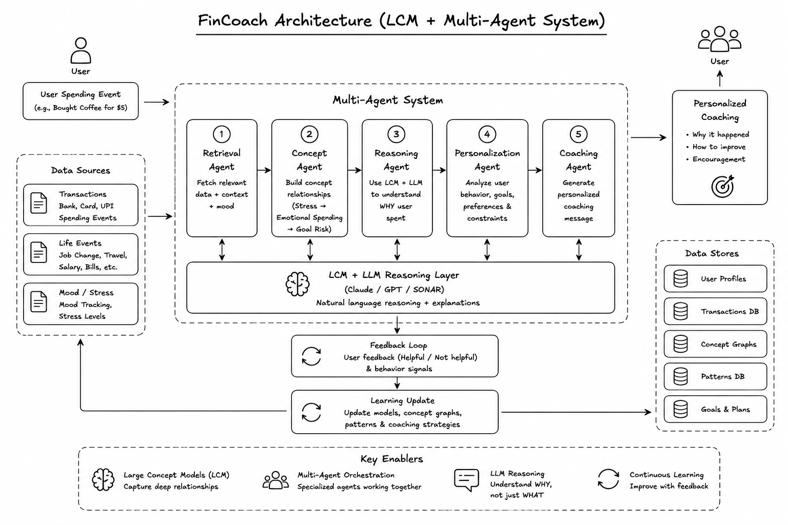

FinCoach is an AI-powered personal finance coaching system designed to help users understand spending behavior, financial habits, and future money decisions in a simple and personalized way. The goal is to move beyond basic budgeting apps and create a system that can reason like a real financial coach.
Instead of only reading raw transaction numbers, FinCoach understands the meaning behind financial events such as spending, income changes, savings goals, and life events. It can identify whether a transaction is a routine expense, an emergency, a lifestyle shift, or a possible risk to a savings target.
The platform uses a multi-agent setup where each agent has a specific role. This makes the system easier to scale, easier to explain, and better for interview-level technical discussion.
FinCoach helps users make better financial decisions by converting financial activity into actionable coaching insights. It does not only answer "what did you spend" but also "why it matters" and "what to do next."

To build FinCoach, multiple AI concepts, data-processing techniques, and intelligent system components were integrated together. The platform is designed to understand financial behavior, analyze user activity, and generate personalized financial coaching recommendations.
FinCoach starts by collecting user financial data from multiple sources. This includes spending events, income records, saving goals, and life events such as rent changes, travel, tuition, or job changes.
The collected data is cleaned and organized. Transactions are categorized by amount, time, type, and spending purpose. This step ensures the model receives structured, reliable, and decision-ready data.
The LCM layer transforms raw numbers into financial meaning. For example, instead of only reading "$120 spent," it can classify that event as recurring food expense, emergency travel cost, or non-essential lifestyle spending.
After concept extraction, different agents process the information in parallel:
FinCoach learns from user behavior over time. If users accept, reject, or ignore recommendations, the system updates internal weighting and improves future recommendations using reinforcement-style feedback logic.
Final insights are presented in a simple dashboard. Users can clearly see spending patterns, goal progress, risk alerts, and recommended actions. The dashboard is designed for practical decision-making, not just reporting.
Raw Data Sources → Data Processing → LCM Concept Layer → Multi-Agent System → Feedback Loop → User Dashboard
The raw data sources provide financial inputs. The processing layer structures that data. The LCM layer interprets the meaning behind behavior. The multi-agent system performs specialized reasoning for goals, risk, and planning. The feedback loop helps the system adapt continuously. The dashboard delivers final personalized coaching recommendations to the user.